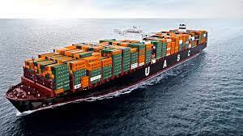
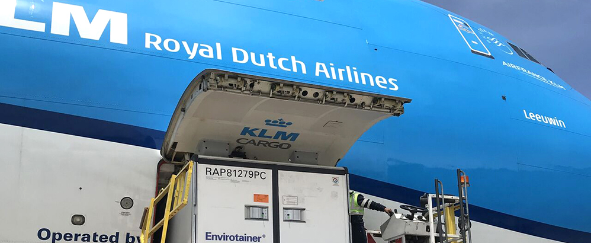
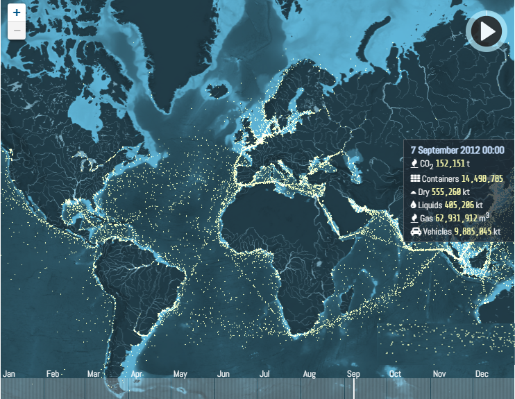

Hay muchas formas y medios de trasladar mercancías, personas o datos de un lugar a otro. Los romanos lo
reconocieron y, por ejemplo, crearon una gigantesca red de carreteras que incluían normas de
tráfico. También inventaron un sistema de suministro de agua que todavía se usa o se imita en muchos países en la actualidad. Los
ingeniosos sistemas y
posibilidades de transportar mercancías de todo tipo de la manera más rápida y rentable, que se originaron en la antigüedad, por
supuesto, ya no están actualizados ni son factibles. Sin embargo, el
agua, el aire y la tierra siguen siendo algunas de las rutas de transporte más importantes del mundo.
Leer másVer VIDEO
Desde el advenimiento de los vuelos de pasajeros en la edad de oro de la década de 1970, el transporte aéreo siempre ha sido la forma más rápida de mover mercancías. Actualmente, sin embargo,
el transporte
aéreo solo es más rápido si puede reservar el espacio apropiado.

En el transporte aéreo, la capacidad se ha desplomado incluso más que en el transporte marítimo. El resultado es un desequilibrio cada vez mayor entre la oferta y la demanda en las principales rutas comerciales de todo el mundo.
COVID-19
también ha cambiado significativamente el comportamiento de los viajes. Los primeros vuelos
fueron cancelados, luego flotas enteras de aviones tuvieron que permanecer en tierra. Había incertidumbre
entre los viajeros (potenciales): ¿sería posible volar de regreso? La falta de vacunación agravó el problema. A medida que las empresas encontraron formas más fáciles de comunicarse desde la oficina
en casa, las videoconferencias y las reuniones virtuales, los viajes de
negocios también se han vuelto menos importantes. El camino de regreso a una recuperación total podría ser difícil, ya que muchas
empresas buscan arreglárselas con presupuestos de viaje más bajos a largo plazo.
Cada año, más de 11 mil millones de toneladas de cosas se transportan por todo el mundo en grandes barcos. Ropa, televisores de pantalla plana, cereales, automóviles, petróleo: transportar estos productos de un
puerto a otro es lo que hace girar la economía mundial.
El transporte marítimo, como los modos terrestre y aéreo, opera en su propio espacio, que es concomitantemente geográfico por
sus atributos físicos, estratégico por su control y comercial por su uso. Si bien las consideraciones geográficas tienden a ser constantes en el tiempo
(excepto por la estacionalidad de los patrones climáticos), las consideraciones estratégicas y especialmente las comerciales son mucho más dinámicas. La fisiografía del transporte marítimo se compone de dos
elementos principales, que son los ríos y los océanos. Aunque están conectados, cada uno representa un dominio específico de circulacion marina. La noción de transporte marítimo se basa en la existencia
de itinerarios regulares , más conocidos como rutas marítimas.

El transporte es una actividad del sector terciario, entendida como el desplazamiento de objetos o personas (contenido) de un lugar (punto de origen) a otro (punto de destino) en un vehículo (medio o
sistema de transporte) que utiliza una determinada infraestructura (red de transporte). Esta ha sido una de las actividades terciarias que mayor expansión ha experimentado a lo largo de los últimos
dos siglos, debido a la industrialización; al aumento del comercio y de
los desplazamientos humanos tanto a escala nacional como internacional; y los avances técnicos que se han producido y que han repercutido
en una mayor rapidez, capacidad, seguridad y menor coste de los transportes.
Leer más